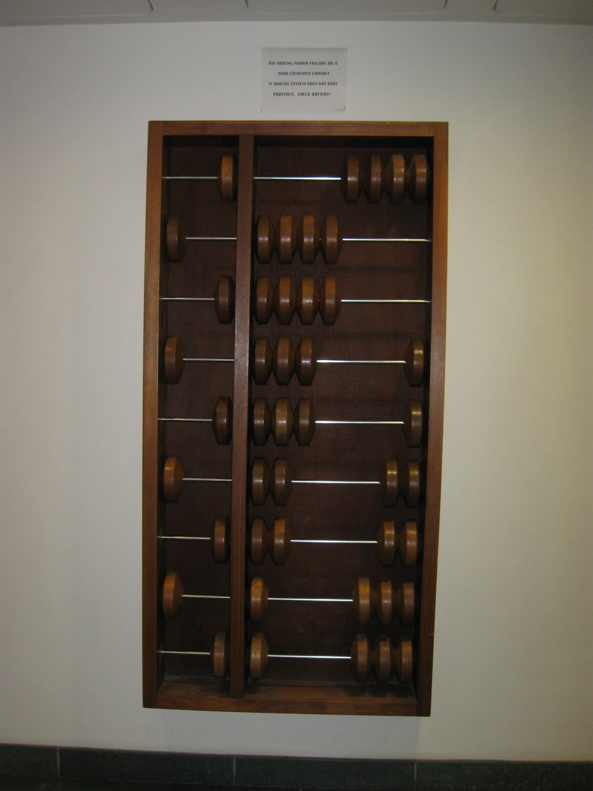
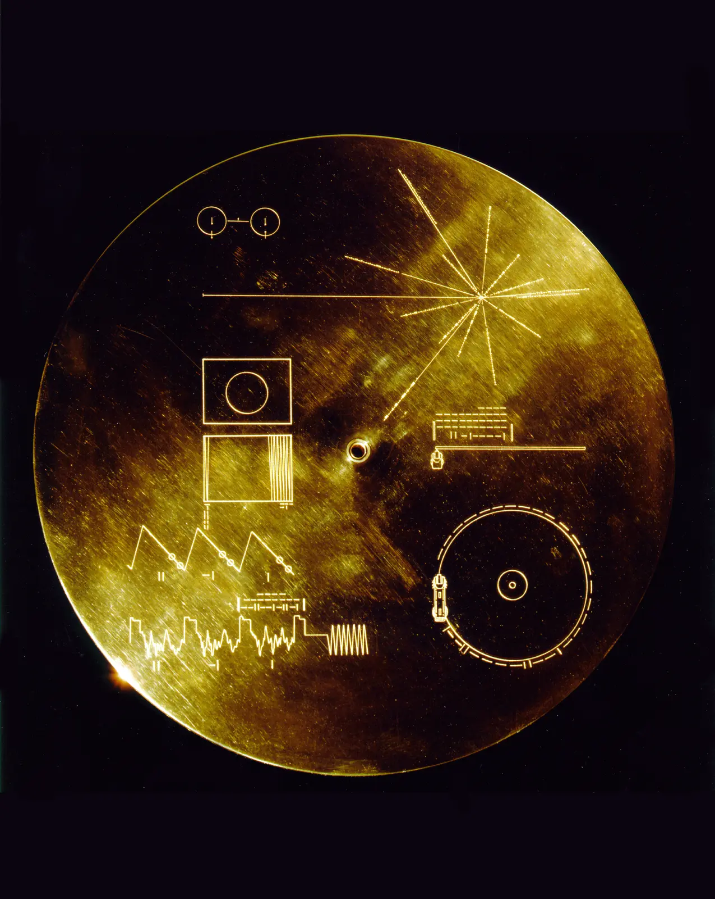

Space Science · Lesson 05 · November 16, 1974 · 2,380 MHz
The Arecibo Message
On November 16, 1974, engineers aimed Puerto Rico’s 305-metre Arecibo radio dish toward the globular cluster M13—roughly 25,000 light-years away—and shifted a 450 kW radio beam by 10 Hz for 167.9 seconds to encode 1,679 bits. Can you decode what humanity chose to say?
01 · Live Signal Decoder & Cell Inspector
23 × 73 Grid · FSK
6×
CARRIER 2,380 MHz ±5 Hz23 × 73
Hover or tap any bit to inspect coordinates & meaning
Color key highlights conceptual groups; the raw transmission was a flat binary stream.
A 1,679-bit portrait of Earth
Seven parts. One continuous tone.
Frank Drake and Carl Sagan structured the broadcast from universal mathematics upward—starting with counting, then chemistry, DNA, humanity, our solar system, and the telescope that sent it.
Numbers 1–10
Select a section or hover over the signal to inspect individual bits.
Row 1, Col 1 · Bit #0 / 16780 · 2,379.999995 MHz (−5 Hz)
Hover or tap anywhere on the 23 × 73 bitmap to inspect that exact pixel, nucleotide residue, planet, or binary digit.
Broadcast note: FSK shifts continuously between two adjacent frequencies—never turning the transmitter off.

Photograph · Select image to enlarge01 · Numbers 1–10 in base 2 (Rows 1–4)Each column encodes an integer top-to-bottom (4s, 2s, 1s), anchored by a mandatory 1 marker on Row 4. Numbers 8, 9, and 10 need a 4th bit (2³ = 8), which spills one column right—proving how multi-column numbers wrap.D Coetzee · Source · CC0 1.0 · Public-domain dedication
Photograph · Select image to enlarge02 · Life’s chemical toolkit: H, C, N, O, P (Rows 6–10)Columns 10–14 read vertically in 4-bit binary (1, 6, 7, 8, 15) above a row of five marker bits: Hydrogen, Carbon, Nitrogen, Oxygen, and Phosphorus—the five elements needed to build DNA.U.S. Geological Survey · Source · Public domain · U.S. government work
Molecular diagram · Select image to enlarge03 · DNA sugar, phosphate & four bases (Rows 12–30)Using the element order just defined ([H, C, N, O, P]), twelve 5-column blocks state the atom counts of polymerized deoxyribose ([7,5,0,1,0]), phosphate ([0,0,0,4,1]), adenine, thymine, cytosine, and guanine residues.Boris; nomenclature corrected by Antony-22 · Source · Public domain · Author dedication
Photograph of a model · Select image to enlarge04 · The double helix & 4,294,441,822 base pairs (Rows 27–46)Two blue sugar-phosphate backbones coil around a central 32-bit binary number encoding 4,294,441,822 (~4.29 billion)—the 1974 estimate for base pairs in human DNA. Modern sequencing established ~3.05–3.2 billion base pairs per haploid genome.Alkivar; image adjustments by WikiPedant · Source · Public domain · Author dedication
Photograph · Select image to enlarge05 · Humanity: 1.76 m tall, 4.29 billion strong (Rows 46–55)Left of the red figure: binary 1110 (14) × λ (12.6 cm) = 1.764 m (~5 ft 9 in), average human height. Right of the figure: 32-bit binary 4,292,853,750, Earth’s approximate 1974 population.NASA / Neil Armstrong · Apollo 11, AS11-40-5903 · Source · Public domain · NASA
NASA overview graphic · Select image to enlarge06 · Our cosmic address (Rows 57–60)From left to right: the Sun (3×3), Mercury, Venus, Earth (shifted upward one pixel directly beneath the human figure to show our home world), Mars, Jupiter, Saturn, Uranus, Neptune, and Pluto—reclassified as a dwarf planet by the IAU in 2006.NASA · Source · Public domain · NASA
Photograph · Select image to enlarge07 · The Arecibo dish: 2,430 wavelengths wide (Rows 61–73)A curved reflector concentrates radio waves toward the suspended feed antenna. Below it, white binary 100101111110 (2,430) framed by blue dimension brackets gives the dish diameter: 2,430 × 12.6 cm ≈ 305 metres. On December 1, 2020, Arecibo’s 900-ton platform collapsed after support cable failures.Alessandro Cai (OliverZena) · Source · Public domain · Author dedication
An extraterrestrial radio telescope receives only a continuous 1D stream of 1,679 bits—no spaces, no line breaks. Because 1,679 = 23 × 73 and both numbers are prime, only two rectangles tile cleanly without leftover bits. Change the column width below to see why almost every guess turns the message into static.
Try widths:
23 cols
Exact prime factor · Clear figure
1,679 = 23 × 73 + 0
At 23 columns, all 73 rows align with zero remainder—revealing digits, atoms, DNA, human, planets, and dish.
Every number in Sections 1–2 reads vertically from top (highest place value) down to the bottom anchor bit (1), which marks the least-significant column edge. Once 1–10 teach binary arithmetic, columns 10–14 state five atomic numbers: the chemistry of DNA.
How do you draw complex organic chemistry without words or 3D pictures? Use a 5-column chemical tuple locked to the order just established: [Hydrogen, Carbon, Nitrogen, Oxygen, Phosphorus]. Note: Arecibo lists atom counts of each residue after condensation bonding into the DNA strand. Select a building block to decode its grid block:
Meters and feet are meaningless to another star system. Instead, the physics of the signal supplies a built-in ruler: a 2,380 MHz radio wave in vacuum has wavelength λ = c / f ≈ 12.6 cm. Test how the binary ruler scales heights and telescope diameters:
Your Height in Arecibo Units
14 λ · 1110₂
Arecibo encoded 14 (1110₂): 14 × 12.6 cm = 1.764 m (~5 ft 9 in, average adult human male height in 1974).
Dish Width in Arecibo Units
2,430 λ = 100101111110₂
2,430 × 0.12596 m = 306.1 m (nominal 305 m / 1,000 ft diameter of Arecibo’s spherical reflector).
Notice both height (14) and telescope width (2,430) share the exact same physical unit: one radio wavelength λ = c / f. Speed of Light →
04 · Where Is the Signal Right Now?
Live Light-Speed Tracker
Because radio waves are electromagnetic light travelling at 299,792.458 km/s (Maxwell’s equations), the November 16, 1974 broadcast has never stopped moving outward from Earth. Here is how far the wavefront has travelled toward Messier 13 as of today:
52.00 lyDistance travelled (light-years)
0.208%Fraction of 25,000 ly trip
4.92 × 10¹⁴ kmKilometres from Earth
Year ~26,974 CEEarliest M13 arrival (~50,000 yr round-trip)
Note on celestial mechanics: Over the next 25,000 years, Earth and M13 orbit the Milky Way at tens to hundreds of km/s—so M13 will have drifted relative to the narrow 1.7-arcminute radio beam long before the signal arrives.
05 · Story, Debate & Public-Domain Archive
History · METI
November 16, 1974
A 168-Second Dedication
At the rededication of Arecibo’s upgraded 305 m surface (38,778 aluminum panels) and new S-band radar, guests listened over loudspeakers as the 450 kW carrier warbled back and forth by 10 Hz—roughly a ~20 TW effective isotropic signal aimed into Hercules.
Frank Drake & Carl Sagan
A Self-Contained Primer
Drake tested early drafts on colleagues including Carl Sagan—whose rule was simple: include nothing that requires Earth language or arbitrary units. Start with binary math, climb to carbon biochemistry and DNA, introduce humanity, mark Earth, and sign with the dish.
SETI vs. METI · 1974–Present
Should Humanity Listen or Broadcast?
Astronomers including Martin Ryle objected to transmitting without global consensus—sparking the enduring debate between passive listening (SETI) and active messaging (METI). In 2020, cable snapping led to Arecibo’s historic platform collapse on December 1.
Hubble Image · Click to enlargeTarget: Messier 13 Globular ClusterHome to over 300,000 ancient stars packed in a ~145-light-year sphere in Hercules, chosen so the narrow beam swept a dense stellar field overhead during the midday dedication.NASA / ESA / STScI · Source · Public domain · NASA/ESAPhotograph · Click to enlargeThe Observatory (1963–2020)Built in a natural limestone sinkhole in Puerto Rico, Arecibo discovered the first binary pulsar, mapped Venus by radar, found the first exoplanets, and transmitted the 1974 signal before collapsing on Dec 1, 2020.Alessandro Cai · Source · Public domain · Author dedication

NASA/JPL Diagram · Click to enlargeSister Artifact: Voyager Golden Record (1977)Three years later, Sagan and Drake co-crafted physical gold-plated copper phonograph discs for Voyager 1 & 2, again using binary digits and hydrogen’s universal 21 cm atomic transition as a ruler and clock.NASA / JPL · Public domain · U.S. government work
06 · 1974 vs. Today & Self-Check
Concept Review
Human Population (32-bit Overflow!)
1974 signal: 4,292,853,750 fits in a 32-bit unsigned integer (max 2³² − 1 = 4,294,967,295).
Today (8.1B+): Exceeds 32 bits! A modern update needs at least 33 bits (6×6 block wouldn’t fit).
Human Genome Base Pairs
1974 estimate: Encoded ~4.29 billion base pairs along the white central DNA spine.
Modern genomics: Human Genome Project & T2T assembly place the haploid genome near ~3.05–3.2 billion base pairs.
Planet Count & Telescope
1974 chart: Shows 9 planets including Pluto (reclassified dwarf planet, 2006) and an active 305 m Arecibo dish (collapsed Dec 1, 2020).
Today’s context: China’s 500 m FAST dish carries single-aperture radio astronomy forward.
1. Why did Frank Drake pick exactly 1,679 bits instead of 1,680 bits?
2. How did Arecibo encode 1s and 0s into the 2,380 MHz radio beam?
3. How could an alien decoder know how tall the red stick figure is in physical units without knowing what a “metre” is?
4. Why did the human figure’s left side show height while Earth’s population was placed on the right—and Earth shifted up in the Solar System?
Connected Lessons Across ClassroomOS
6 Subjects · Interconnected
The Arecibo Message braids together computer science, prime math, chemistry, genetics, physics, and planetary astronomy in one 168-second signal. Follow any thread into its full interactive lesson: